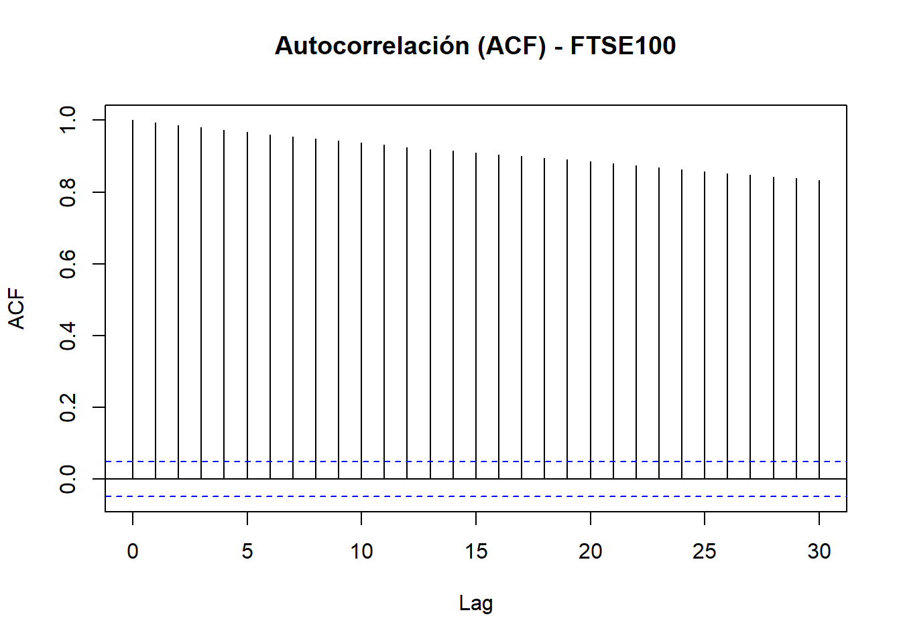
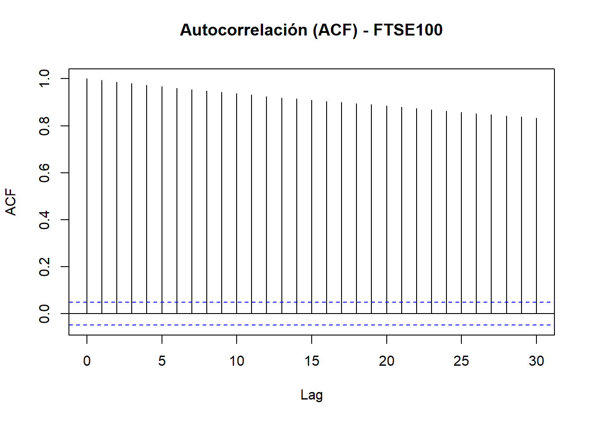

Chapter 3 Desarrollo Actividad 2.
3.1 Preprocesamiento de datos.
3.1.7 Visualizamos la estructura.
## GSPC.Close DJI.Close IXIC.Close GDAXI.Close FCHI.Close FTSE.Close N225.Close HSI.Close 000001.SS.Close
## 2019-01-02 2510.03 23346.24 6665.94 10580.19 4689.39 6734.2 NA 25130.35 2465.291
## 2019-01-03 2447.89 22686.22 6463.50 10416.66 4611.49 6692.7 NA 25064.36 2464.363
## 2019-01-04 2531.94 23433.16 6738.86 10767.69 4737.12 6837.4 19561.96 25626.03 2514.868
## 2019-01-07 2549.69 23531.35 6823.47 10747.81 4719.17 6810.9 20038.97 25835.70 2533.089
## 2019-01-08 2574.41 23787.45 6897.00 10803.98 4773.27 6861.6 20204.04 25875.45 2526.462
## 2019-01-09 2584.96 23879.12 6957.08 10893.32 4813.58 6906.6 20427.06 26462.32 2544.3453.2 Gráfico de evolución histórica de todos los índices.
3.2.2 Gráfico.
El gráfico muestra la evolución diaria de los precios de cierre de los principales índices bursátiles a nivel mundial desde 2019 hasta la fecha actual. Cada línea representa un índice diferente, con escalas independientes de precio en el eje Y y fechas en el eje X.
Eje X: Fecha (de 2019 a 2025).
Eje Y: Precio de cierre (escala real de cada índice).
Variables representadas: SP500, Dow Jones, Nasdaq, DAX, CAC40, FTSE100, Nikkei225, Hang Seng, Shanghai Composite.
3.3 Promedios Móviles
3.3.1 Aplicamos promedio móvil (7, 30, 90 días) para cada índice.
Code
promedios_moviles <- lapply(cierres_zoo, function(serie) {
data.frame(
Fecha = index(serie),
Original = as.numeric(serie),
MA_7 = as.numeric(rollmean(serie, k = 7, fill = NA, align = "right")),
MA_30 = as.numeric(rollmean(serie, k = 30, fill = NA, align = "right")),
MA_90 = as.numeric(rollmean(serie, k = 90, fill = NA, align = "right"))
)
})3.3.3 Graficamos los promedios móviles en todos los indices con (7, 30, 90 días)
SP500: Crecimiento fuerte post-pandemia, promedios móviles confirman tendencia alcista estructural, recuperación rápida tras caídas.
Dow Jones: Crecimiento sostenido, mayor sensibilidad a choques globales, MA_90 actúa como soporte de tendencia.
Nasdaq: Expansión explosiva durante 2020-2022, correcciones posteriores, fuerte volatilidad de corto plazo.
DAX: Recuperación sólida, crecimiento más moderado que SP500, volatilidad controlada en 2023-2024.
CAC40: Crecimiento progresivo, recuperación fuerte post-pandemia, estabilidad pese a contexto europeo incierto.
FTSE100: Recuperación más lenta, crecimiento más estable pero menos acelerado, reflejando impacto de Brexit y COVID-19.
Nikkei225: Crecimiento firme y constante, volatilidad moderada, estabilidad asiática frente a shocks externos.
HangSeng: Tendencia decreciente persistente, afectado por tensiones políticas y regulación, no logra recuperación estructural.
Shanghai Composite: Oscilaciones cíclicas sin tendencia fuerte, movimientos suaves ligados a política económica interna.
Code
graficar_promedios_moviles <- function(df, nombre_indice) {
df_long <- df %>%
pivot_longer(cols = c("Original", "MA_7", "MA_30", "MA_90"),
names_to = "Serie", values_to = "Valor")
ggplot(df_long, aes(x = Fecha, y = Valor, color = Serie)) +
geom_line() +
labs(
title = paste(nombre_indice, "- Evolución y Promedios Móviles (7, 30, 90 días)"),
x = "Fecha",
y = "Precio",
color = "Serie"
) +
theme_minimal()
}
for (indice in nombres_indices) {
print(graficar_promedios_moviles(promedios_moviles[[indice]], indice))
}

3.4 AutoCorrelación ACF
3.4.1 Graficamos la autocorrelación (ACF) en todos los indices.
SP500: Presenta autocorrelaciones extremadamente altas en todos los lags. Indica muy alta dependencia temporal, el precio de hoy está casi totalmente explicado por el precio de ayer, anteayer, etc.
DowJones: Patrón idéntico al SP500, autocorrelaciones cercanas a 1 hasta el lag 30. Confirma fuerte persistencia y memoria de largo plazo en el comportamiento de precios.
Nasdaq: Igual que SP500 y DowJones, persistencia total en los precios diarios. Movimiento fuertemente dependiente de valores anteriores. Alta estabilidad interna.
DAX: Alta autocorrelación, pero comienza a decrecer muy lentamente conforme aumenta el lag. Muestra persistencia, aunque ligeramente menos rígida que en índices estadounidenses.
CAC40: Comportamiento muy similar al DAX con alta autocorrelación inicial, pero con una leve pendiente descendente a partir del lag 10. Indica ligero debilitamiento de la dependencia en el tiempo.
FTSE100: Alta autocorrelación, pero con una pendiente descendente más pronunciada que en DAX o CAC40. La dependencia de precios pasados existe pero se va diluyendo más rápido.
Nikkei225: Persistencia fuerte (autocorrelaciones cercanas a 1), aunque ligeramente más “sueltas” que en los mercados occidentales. Los precios tienden a ser explicados por valores pasados, pero hay algo más de ruido.
HangSeng: Alta autocorrelación inicial, pero decayendo progresivamente con el lag. Refleja una memoria de precios, aunque menos estable y más volátil que SP500 o DowJones.
Shanghai Composite: Es el único donde la autocorrelación desciende de forma continua y más marcada a medida que crece el lag. Esto indica que la memoria de los precios se erosiona rápidamente en China. Mayor aleatoriedad y menor persistencia estructural en los precios.
Code
graficar_acf <- function(serie, nombre_indice) {
serie_sin_na <- na.omit(serie) # 1. Eliminar los valores faltantes (NA)
acf(coredata(serie_sin_na), # 2. Calcula autocorrelaciones
lag.max = 30, # 3. Mide autocorrelaciones hasta 30 rezagos (lags)
main = paste("Autocorrelación (ACF) -", nombre_indice)) # 4. Título del gráfico
}
# Aplicar la función a todos los índices
for (indice in nombres_indices) {
graficar_acf(cierres_zoo[[indice]], indice)
} 

3.5 Descomposición de serie de tiempo.
3.5.1 Descomponemos y graficamos los indices bursatiles utilizando la forma clasica y STL con pasos de limpieza e implementación.
Code
descomponer_y_graficar <- function(serie_zoo, nombre_indice) {
# Eliminamos NA
serie_limpia <- na.omit(serie_zoo)
# Convertimos a vector numérico puro
valores_numericos <- as.numeric(serie_limpia)
# Convertimos a objeto ts
serie_ts <- ts(valores_numericos,
start = c(2019, 1),
frequency = 252)
# Graficamos descomposición clásica
plot(decompose(serie_ts))
mtext(paste("Descomposición Clásica -", nombre_indice), side = 3, line = 1, cex = 1.5)
# Graficamos descomposición STL
plot(stl(serie_ts, s.window = "periodic"))
mtext(paste("Descomposición STL -", nombre_indice), side = 3, line = 1, cex = 1.5)
}
# Aplicamos la función a todos los índices
for (indice in nombres_indices) {
descomponer_y_graficar(cierres_zoo[[indice]], indice)
}


3.6 Tabla de resumen con tendencia, estacionalidad y ruido; para todos los indices.
Code
analizar_comportamiento <- function(serie_zoo) {
serie_limpia <- na.omit(serie_zoo)
# Validar que tenga suficientes datos
if (length(serie_limpia) < 30) {
return(c(Tendencia = NA, Estacionalidad = NA, Ruido = NA))
}
valores <- as.numeric(serie_limpia)
ts_serie <- ts(valores, start = c(2019, 1), frequency = 252)
# Intentar descomposición STL
descomposicion <- tryCatch({
stl(ts_serie, s.window = "periodic")
}, error = function(e) {
return(NULL)
})
if (is.null(descomposicion)) {
return(c(Tendencia = NA, Estacionalidad = NA, Ruido = NA))
}
trend <- descomposicion$time.series[, "trend"]
seasonal <- descomposicion$time.series[, "seasonal"]
remainder <- descomposicion$time.series[, "remainder"]
# Validar que trend tenga al menos dos valores válidos
if (sum(!is.na(trend)) < 2) {
return(c(Tendencia = NA, Estacionalidad = NA, Ruido = NA))
}
# Extraer extremos no NA para la tendencia
primer_valido <- trend[which(!is.na(trend))[1]]
ultimo_valido <- trend[rev(which(!is.na(trend)))[1]]
media_trend <- mean(trend, na.rm = TRUE)
# Calcular cambio de tendencia de forma segura
cambio_tendencia <- (ultimo_valido - primer_valido) / media_trend
if (is.na(cambio_tendencia)) {
tendencia_eval <- NA
} else if (abs(cambio_tendencia) > 0.1) {
tendencia_eval <- ifelse(cambio_tendencia > 0, "Creciente", "Decreciente")
} else {
tendencia_eval <- "Estable"
}
promedio_nivel <- mean(valores, na.rm = TRUE)
amplitud_estacional <- max(seasonal, na.rm = TRUE) - min(seasonal, na.rm = TRUE)
estacionalidad_eval <- if ((amplitud_estacional / promedio_nivel) > 0.05) {
"Fuerte"
} else {
"Débil"
}
sd_ruido <- sd(remainder, na.rm = TRUE)
ruido_eval <- if ((sd_ruido / promedio_nivel) > 0.05) {
"Alto"
} else {
"Moderado"
}
return(c(Tendencia = tendencia_eval, Estacionalidad = estacionalidad_eval, Ruido = ruido_eval))
}
# Aplicar la función a todos los índices
resumen_automatico <- t(sapply(cierres_zoo, analizar_comportamiento))
# Convertir a data frame con nombres claros
resumen_automatico_df <- data.frame(
Indice = rownames(resumen_automatico),
Tendencia = resumen_automatico[, "Tendencia"],
Estacionalidad = resumen_automatico[, "Estacionalidad"],
Ruido = resumen_automatico[, "Ruido"],
row.names = NULL
)
# Mostrar tabla
knitr::kable(
resumen_automatico_df,
caption = "Resumen automático de la tendencia, estacionalidad y ruido observados por índice (basado en descomposición STL)."
)| Indice | Tendencia | Estacionalidad | Ruido |
|---|---|---|---|
| SP500 | Creciente | Fuerte | Moderado |
| DowJones | Creciente | Fuerte | Moderado |
| Nasdaq | Creciente | Fuerte | Moderado |
| DAX | Creciente | Fuerte | Moderado |
| CAC40 | Creciente | Fuerte | Moderado |
| FTSE100 | Creciente | Fuerte | Moderado |
| Nikkei225 | Creciente | Fuerte | Moderado |
| HangSeng | Decreciente | Fuerte | Moderado |
| ShanghaiComposite | Creciente | Fuerte | Moderado |
3.7 Mapa de calor
Code
# Usamos el resumen automático que ya creamos
resumen_mapa <- resumen_automatico_df
# Codificar las variables cualitativas a valores numéricos
resumen_mapa_numeric <- resumen_mapa %>%
mutate(
Tendencia = case_when(
Tendencia == "Creciente" ~ 1,
Tendencia == "Decreciente" ~ -1,
Tendencia == "Estable" ~ 0,
TRUE ~ NA_real_
),
Estacionalidad = case_when(
Estacionalidad == "Fuerte" ~ 1,
Estacionalidad == "Débil" ~ 0,
TRUE ~ NA_real_
),
Ruido = case_when(
Ruido == "Alto" ~ 1,
Ruido == "Moderado" ~ 0,
TRUE ~ NA_real_
)
)
# Reorganizar el dataframe en formato largo para ggplot
resumen_long <- resumen_mapa_numeric %>%
pivot_longer(cols = c(Tendencia, Estacionalidad, Ruido),
names_to = "Caracteristica",
values_to = "Valor")
# Crear el Heatmap
ggplot(resumen_long, aes(x = Caracteristica, y = Indice, fill = Valor)) +
geom_tile(color = "white") +
scale_fill_gradient2(
low = "red", mid = "white", high = "green", midpoint = 0,
limits = c(-1, 1),
name = "Nivel"
) +
labs(
title = "Mapa de Calor: Tendencia, Estacionalidad y Ruido por Índice",
x = "Componente",
y = "Índice Bursátil"
) +
theme_minimal() +
theme(axis.text.x = element_text(angle = 45, hjust = 1))